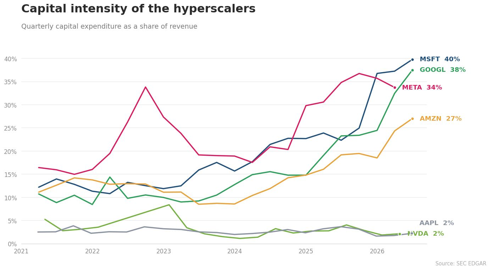

On Capital Intensity
Every week there is another headline about the hundreds of billions going into AI infrastructure. The absolute numbers had stopped telling me anything, so I spent some time this afternoon pulling capital expenditure and revenue data for the hyperscalers to get a gauge on their capital intensity.

I noticed three patterns:
Consensus broke. Back in early 2021, all six of these companies sat inside roughly a 14-point band, with quarterly capex as a share of revenue somewhere between 3% and 17%. Today the spread is about 38 points.
The same ratio can mean very different things. All six are buying compute, but it is pointed in different directions. Microsoft and Amazon are building capacity they can rent out, whereas Meta is building capability for itself.
The shovel seller is still winning. Nvidia sits at 2% while still making record profits. This suggests the most secure position in an infrastructure boom might not be owning the depreciating assets at all, but selling them to everyone who does.
I am not entirely sure how these bets will play out over the next few years, but I am moving to Silicon Valley in a few weeks, and I can think of few better places to watch it happen.